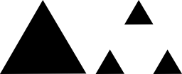

Ahora retire el intervalo abierto (1/3,2/3), es decir, retire el tercio medio de
[0,1],
pero no los números 1/3 y 2/3.
Esto deja dos intervalos [0, 1/3] y [2/3,1] de longitud 1/3 cada
uno y esto completa una etapa básica de la construcción.
Ahora repitamos, observamos los intervalos restantes [0,1/3] y [2/3,1]
y remueva sus tercios medios, lo que produce cuatro intervalos de longitud 1/9.
Continúe de esta manera. En otras palabras, hay un proceso de retroalimentación
en el que se genera una secuencia de intervalos cerrados.
El tamaño total del conjunto Cantor es cero
Esto es fácil de mostrar: en la etapa uno, la longitud total es 1. En la etapa 2 es 1/3+1/3 = 2/3.
En la etapa 3, la longitud es 4/9=(2/3)2, y en la etapa n es
(2/3)n-1. Cuando n → ∞ esto tiende
a cero. Por lo tanto, la longitud acumulativa total del conjunto de Cantor es cero.
Cuadrado de Cantor
La idea básica para elaborar el conjunto de Cantor a partir de un segmento es: dividir el segmento en tres
partes iguales y suprimir la parte central.
Realiza las siguientes instrucciones:
Dibuja un cuadrado de 1 cm de lado.
Sobre cada uno de los lados aplica la construcción básica para el conjunto de Cantor.
Con cada par de segmentos que forman las esquinas construye un cuadrado.
En cada uno de los cuadrados de la esquina realiza nuevamente los pasos 1 y 2.
Describe la figura que se obtendría de continuar indefinidamente con este procedimiento.
Cuadrado de Cantor
Triángulo de Cantor
Dibuja un triángulo equilátero (1 cm de lado) y sobre cada uno de los lados aplica la construcción básica
de
Cantor. En cada vértice, con el par de segmentos formados, completa un triángulo. Repite el proceso sobre
cada
uno de estos triángulos generados en las esquinas. Al terminar, vuelve a aplicar la construcción básica
sobre
cada uno de los nuevos triángulos.

Triángulo de Cantor